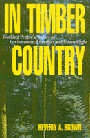

<body bgcolor="#FFFFFF" text="#000000" link="#0000FF" vlink="#CC0000" alink="#CC0000"><center><hr width="350" size="1" align="center" noshade>Personal stories from all sides of the battle for preserving timber country<hr width="350" size="1" align="center" noshade><p><a href="https://cdcshoppingcart.uchicago.edu/Cart/ChicagoBook.aspx?ISBN=9781566392723&&PRESS=temple" target="_top">Buy this book!</a> | <a href="https://cdcshoppingcart.uchicago.edu/Cart/Cart.aspx?PRESS=temple" target="_top">View Cart</a> | <a href="https://cdcshoppingcart.uchicago.edu/Cart/Cart.aspx?PRESS=temple" target="_top">Check Out</a></p><p></p></center><!--none//--><h1>In Timber Country</h1>
<H2>Working People's Stories of Environmental Conflict and Urban Flight</H2>
<h3>Beverly A. Brown</h3>
<P>cloth 1-56639-272-1 $78.50, Mar 95, <FONT COLOR=#990033>Out of Stock Unavailable</FONT>
<br>paper 1-56639-273-X $35.95, Mar 95, <FONT COLOR=#990033>Available</FONT>
<BR> 336 pp
6x9
1&nbsp;map(s) 17&nbsp;halftones
</P><BLOCKQUOTE><I>"[A] sophisticated attempt to get a handle on the crisis in rural America. The oral histories she has gathered are a primer for anyone interested in learning a more complicated and interesting truth about the Northwest timber wars."</I>
<br>&#151<b><I>The Progressive</I></b><I></I></BLOCKQUOTE>
<p>Southwest Oregon embodies the fast-changing social and environmental trends of the Pacific Northwest: the volatile clash of logging and environmental interests over the fate of old growth forests, an influx of wealthy suburbanites from California, and the effects of national economic trends. Championing neither environmentalists nor timber companies, Beverly A. Brown analyzes the subsequent transformation of the region. Her candid interviews with mostly poor to lower-middle-income people from the Rogue Valley region bring these looming social, cultural, and economic changes into the realm of everyday life.
<p>Working-class men and women describe a growing segregation of private forest lands and waterways&#151where people could once move freely, they are now boxed in by fences and No Trespassing signs; where once tranquility and open space was treasured, traffic and tract homes envelop the landscape. Talking openly, they lament the increased presence of drugs, problems with the welfare system, the dearth of non-logging employment opportunities, and family violence. But they also share a love of their rural hometowns and a genuine desire to balance preservation of the environment with the economic well-being of their communities.
<BR>&nbsp;<h2>Contents</h2><P>
<p>Acknowledgments
<br>Preface
<br>Note on the Interviews
<br>Glossary
<br>Introduction: In-migrations, Timber, and Owls: Background to a Transformation
<p><b>Part I: In the Country</b>
<br>1. Peter Alten and Larry Lyon
<br><I>This is not an area to become a millionaire in. It never was. The only difference now is, not only can you not become a millionaire, you cannot have any peace and quiet either.</I>
<br>2. Barbara Roland
<br><I>I felt lonesome, to walk down my city street and not see a face that I recognized.</I>
<br>3. Kevin Sjorn
<br><I>If the environmentalists had grown up the way I did, they wouldn't be environmentalists.... That's why they seem so distant.</I>
<br>4. Roslyn Sellers
<br><I>I remember being proud that my dad worked in a mill.</I>
<br>5. Vera and Chuck Carter
<br><I>I don't think it's less community&#151I think it's more a group of communities.</I>
<br>6. Gary Carter
<br><I>Boy, anymore you try and go back to some of the places where we used to go and fish, or we used to go and swim. Somebody's down there and they're calling the cops. They're sicing the dog on you, they're pulling a gun on you.</I>
<br>7. Theresa Carter
<br><I>Generations are changing from my parents' "Just do what ever you want," to knowing that you can't do whatever you want.</I>
<br>8. Wayne Douglas
<br><I>They didn't want any non-whites spending a night in Grants Pass.</I>
<p><b>Part II: In Our Lives</b>
<br>9. Rhonda Marshall
<br><I>You see all of the people here in the valley going through this withdrawal; they're holding the anger in their houses.</I>
<br>10. Sue Cleary
<br><I>We're all hating each other for no reason.</I>
<br>11. Kathy Dodge
<br><I>I dropped out of school when I was a freshman, and again when I was a sophomore.... It was, like, "Well, if you don't want to be in school, then fine."</I>
<br>12. George Thomas
<br><I>My father was never big into supporting the bureaucracy. And I really go right along with that.</I>
<br>13. Dorothy Harris
<br><I>It's a real dangerous occupation.... I worried about my husband working in the woods when he was setting chokers....and he did have a couple of real close calls.</I>
<br>14. Henry Dubnik
<br><I>We were probably part of the first wave of Californians....</I>The dreaded Californians<I>.</I>
<p><b>Part III: What Kind of Future</b>
<br>15. Margaret and Stanley Norman
<br><I>What do we all do? Become park rangers?</I>
<br>16. Amy Sturman
<br><I>I think the environmentalists are going to win. Nature has the public sympathy.</I>
<br>17. Ellen Tigart
<br><I>It seems like life has really been kind of a survival test.</I>
<br>18. Nathan Cullenbach
<br><I>We've been confronted with so many personal problems, and nobody knows how to deal with them.</I>
<br>19. Ralph Pendleson
<br><I>They have to drop down to a five-, six-dollar-an-hour job. And they wonder why people are losing their homes.</I>
<br>20. Caroline Coldbrook
<br><I>I don't think anybody else wants to be where women are in the service economy.</I>
<p>21. Conclusion: Language, Complexity, and Power: Life Stories and a Community in Transition
<br>22. An Environmentalist Reflection &#150 Art and Paula Downing
<br>Postscript
<br>References
<br>Index
</P><BR>&nbsp;<H2>About the Author(s)</H2>
<table><tr><td valign="top"><img src="/tempress/authors/1146_au.gif" height="90" width="75"></td><td width="100%" valign="middle"><p><b>Beverly A. Brown</b> is an independent scholar and activist.</P></td></tr></table>
<BR><H2>Subject Categories</H2>
<p><A HREF="/tempress/nature.html" TARGET="_top">Nature and the Environment</a>
<BR><A HREF="/tempress/urban.html" TARGET="_top">Urban Studies</a>
</p>
<BR><h2 class="inpageheading">In the series</H2>
<P><I><a href="http://www.temple.edu/tempress/conflicts.html" onMouseOver="window.status='Click for other books in this series!'; return true;" onMouseOut="window.status=''; return true;" target="_top">Conflicts in Urban and Regional Development</a></i>, edited by John R. Logan and Todd Swanstrom.
</p><p><i>Conflicts in Urban and Regional Development</i>, edited by John R. Logan and Todd Swanstrom, includes books on urban policy and issues of city and regional planning, accounts of the political economy of individual cities, and books that compare policies across cities and countries.</p>
<p align="center"><a href="https://cdcshoppingcart.uchicago.edu/Cart/ChicagoBook.aspx?ISBN=9781566392723&&PRESS=temple" target="_top">Buy this book!</a> | <a href="https://cdcshoppingcart.uchicago.edu/Cart/Cart.aspx?PRESS=temple" target="_top">View Cart</a> | <a href="https://cdcshoppingcart.uchicago.edu/Cart/Cart.aspx?PRESS=temple" target="_top">Check Out</a></p><p><font face="Arial" size="1"><a href="copyright.html" onMouseOver="window.status='Web Copyright Policy';return true;" onMouseOut="window.status=''" title="Web Copyright Policy">&copy;</a> 2015 <a href="http://www.temple.edu" target="new" onMouseOver="window.status='Link to Temple University home page';return true;" onMouseOut="window.status=''" title="Link to Temple University home page">Temple University</a>. All Rights Reserved. http://www.temple.edu/tempress/titles/1146_reg.html</font></p>